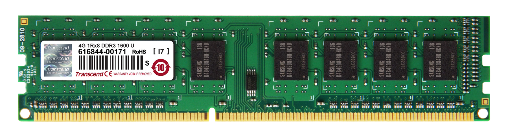
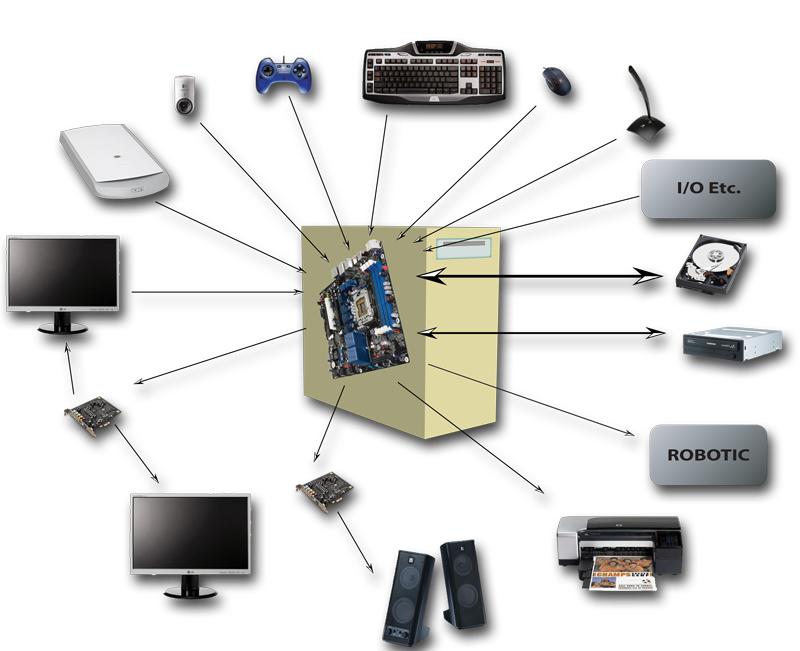
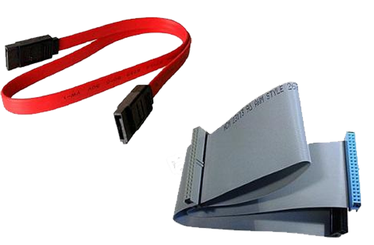
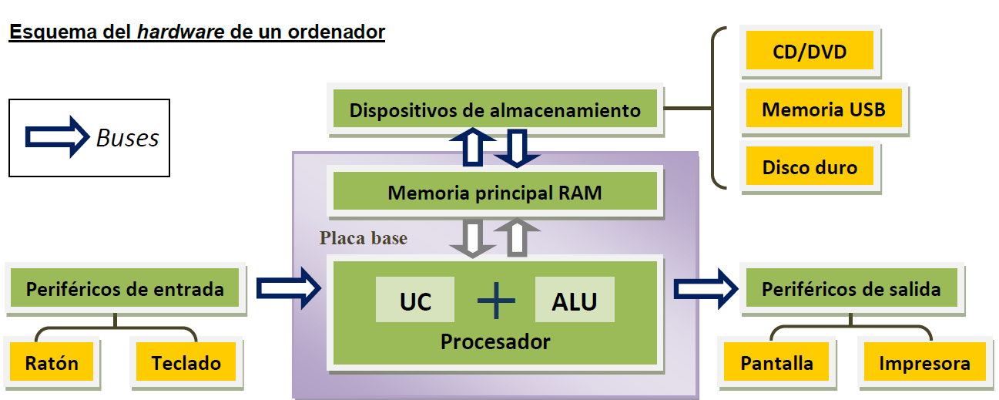
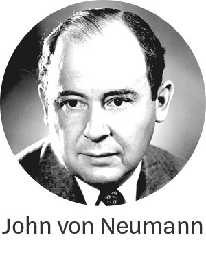

A pesar de que tiene ya más de 70 años, los dispositivos digitales tales como ordenadores, smartphones, tablets y consolas siguen diseñándose en base a la llamada arquitectura de John Von Neumann (1903-1957). Este modelo define los principales componentes estructurales que debe tener un ordenador, entre los que se encuentran:
Procesador
Controla el funcionamiento del ordenador y ejecuta programas. Consta a su vez de dos elementos principales:
Unidad de control (UC). Encargada de leer las instrucciones de la memoria y controlar su ejecución.
Unidad aritmético-lógica (ALU). Realiza todas las operaciones matemáticas y lógicas de los programas.
Memoria principal

Almacena los programas y datos que se están procesando de forma temporal. Es la memoria RAM y caché que utilizamos en los ordenadores actuales.
Dispositivos de entrada/salida (E/S)

Son los dispositivos que intercambian datos con el ordenador y se denominan periféricos. Los ordenadores suelen contar con periféricos de entrada, como el teclado o el ratón; periféricos de salida, como el monitor y la impresora, y periféricos de entrada y salida como los discos duros.
Buses

Conexiones por las que circula la información y proporcionan la comunicación entre el procesador, la memoria y los dispositivos de E/S.
Los ordenadores actuales cuentan también con los siguientes componentes:
Caja o carcasa. Estructura que permite organizar y proteger los elementos internos.
Fuente de alimentación. Suministra las tensiones eléctricas necesarias para el funcionamiento de todos los componentes internos del ordenador.
Placa base. Circuito impreso al que se conectan los distintos componentes.
Ventiladores. Refrigeran el interior de la caja y evitan sobrecalentamientos en los equipos.

Lee
John Von Neumann
John von Neumann, el genio que diseñó la arquitectura de nuestros ordenadores, lo hizo hace 75 años, y este es solo uno de sus logros.
Durante su vida se codeó con científicos de la talla de Albert Einstein, Alan Turing o Robert Oppenheimer, lo que puede ayudarnos a hacernos una idea precisa de la envergadura intelectual de John von Neumann. Nació en 1903, en una Budapest bien afianzada en el Imperio austrohúngaro, y desde muy pequeño demostró tener una inteligencia extraordinaria que lo dotó especialmente para la ciencia en general y las matemáticas en particular.
Las numerosas biografías y artículos que abordan sus logros suelen recoger que con solo seis años era capaz de hablar en griego antiguo, una lengua que distaba mucho de su idioma materno, y también podía desarrollar cálculos matemáticos complejos sin utilizar lápiz y papel. Su única herramienta era su mente. Pero esto no es todo. Al parecer con ocho años estaba familiarizado con el cálculo diferencial e integral, lo que provocó que fuese catalogado como un niño superdotado que aventajaba a los niños de su edad desde un punto de vista intelectual con una superioridad insultante.
Su ansia por aprender le llevó a simultanear sus estudios de Matemáticas en Budapest con la licenciatura en ingeniería química que cursó en la misma Escuela Politécnica Federal de Zúrich por cuyas aulas pasó no muchos años antes Albert Einstein.

Poco después de la conclusión de la Primera Guerra Mundial von Neumann inició sus estudios de Matemáticas en la Universidad de Budapest, y en solo cinco años logró terminar la carrera y obtener el doctorado. Su apetito desaforado por la ciencia y su ansia por aprender le llevó a simultanear sus estudios de Matemáticas en Budapest con la licenciatura en ingeniería química que cursó en la misma Escuela Politécnica Federal de Zúrich por cuyas aulas pasó no muchos años antes Albert Einstein.
Cuando concluyó sus estudios consiguió un puesto como profesor asociado de Matemáticas en la Universidad de Berlín, y pocos años más tarde fue tentado por la Universidad de Princeton, en Estados Unidos, para impartir allí un semestre. Durante varios años von Neumann ejerció como profesor universitario tanto en Alemania como en Estados Unidos, pero la llegada de los nazis al poder y la presión que comenzaron a ejercer de inmediato sobre los judíos (von Neumann era judío) propiciaron que decidiese instalarse definitivamente en América.
Su gran aportación a la informática: la arquitectura de von Neumann.
El sobresaliente currículo académico y profesional de von Neumann provocó que la Universidad de Princeton contase con él en el plantel de profesores de su recién inaugurado Instituto de Estudios Avanzados, una institución en la que coincidió con Albert Einstein, de quien unos años antes había recibido clases cuando estudiaba en Berlín. Pero en este centro no coincidió solo con Einstein; también trabó amistad con Alan Turing, un joven y prometedor matemático británico que estudiaba su doctorado y al que había conocido poco antes cuando von Neumann ejerció como profesor sustituto en la Universidad de Cambridge.
John von Neumann y Alan Turing no compartían solo su pasión por las matemáticas. A ambos les apasionaba la computación, lo que provocó que los dos volcasen una gran parte de sus esfuerzos en esta disciplina
John von Neumann y Alan Turing no compartían solo su pasión por las matemáticas. A ambos les apasionaba la computación, lo que provocó que los dos volcasen una gran parte de sus esfuerzos en esta disciplina.
No está claro en qué medida el trabajo de uno influyó en el del otro, aunque todo parece indicar que un artículo publicado por Turing en 1936 tuvo un gran impacto en el trabajo de von Neumann. En ese texto el matemático inglés describió una máquina teórica que tenía una memoria infinita en la que era posible almacenar tanto instrucciones como datos, lo que hacía posible la ejecución de distintos programas.
Diagrama de bloques funcionales de la arquitectura propuesta por John von Neumann.
La semejanza conceptual entre esa «máquina de Turing universal», que es como ha pasado a la historia, y los ordenadores actuales es evidente. La mayor parte de los historiadores acepta que von Neumann debió de verse muy influenciado por las innovadoras ideas de Alan Turing, una semilla que diez años más tarde, a mediados de la década de 1940, le llevó a proponer un modelo de arquitectura de computadores que hacía posible la ejecución de distintos programas que previamente se podían almacenar en la memoria de la computadora. Este enfoque en aquella época fue muy innovador y sorteaba las limitaciones de los computadores que ya se habían construido, como el ENIAC o el Colossus, y que exigían una programación muy compleja y laboriosa mediante interruptores y cables de conexión.
La arquitectura de von Neumann, en la que están claramente inspirados los ordenadores actuales, propone la utilización de una unidad central de procesamiento o CPU, que contiene una unidad aritmético lógica capaz de llevar a cabo cálculos matemáticos sencillos, un conjunto de registros que permiten el almacenamiento temporal de datos y direcciones de memoria, y una unidad de control que se encarga de recoger las instrucciones desde la memoria principal, de decodificarlas y ejecutarlas. Además, este modelo de arquitectura también propone la existencia de una memoria principal en la que residen los datos y las instrucciones, y de un bus de entrada y salida que permite cargar los programas y los datos desde un medio de almacenamiento externo y entregar un resultado.
 Controla el funcionamiento del ordenador y ejecuta programas. Consta a su vez de dos elementos principales:
Controla el funcionamiento del ordenador y ejecuta programas. Consta a su vez de dos elementos principales: